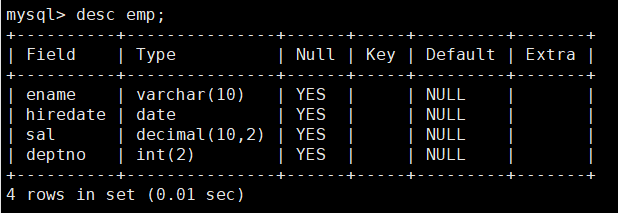

学习不走弯路，关注公众号 回复「学习路线」，获取mall项目专属学习路线！
开发者必备Mysql命令
开发者必备Mysql常用命令，涵盖了数据定义语句、数据操纵语句及数据控制语句，基于Mysql5.7。
数据定义语句(DDL)
数据库操作
- 登录数据库：
mysql -uroot -proot - 创建数据库：
create database test - 查看所有数据库：
show databases - 选择数据库并使用：
use test - 查看所有数据表：
show tables - 删除数据库：
drop database test
表操作
- 创建表：
create table emp(ename varchar(10),hiredate date,sal decimal(10,2),deptno int(2))create table dept(deptno int(2),deptname varchar(10)) - 查看表的定义：
desc emp - 查看表定义（详细）：
show create table emp \G - 删除表：
drop table emp - 修改表字段：
alter table emp modify ename varchar(20) - 添加表字段：
alter table emp add column age int(3) - 删除表字段：
alter table emp drop column age - 字段改名；
alter table emp change age age1 int(4) - 修改表名：
alter table emp rename emp1
数据操纵语句(DML)
插入记录
- 指定名称插入：
insert into emp (ename,hiredate,sal,deptno) values ('zhangsan','2018-01-01','2000',1) - 不指定名称插入：
insert into emp values ('lisi','2018-01-01','2000',1) - 批量插入数据：
insert into dept values(1,'dept1'),(2,'dept2')
修改记录
update emp set sal='4000',deptno=2 where ename='zhangsan'
删除记录
delete from emp where ename='zhangsan'
查询记录
- 查询所有记录：
select * from emp - 查询不重复的记录：
select distinct deptno from emp - 条件查询：
select * from emp where deptno=1 and sal<3000 - 排序和限制：
select * from emp order by deptno desc limit 2 - 分页查询(查询从第0条记录开始10条)：
select * from emp order by deptno desc limit 0,10 - 聚合(查询部门人数大于1的部门编号)：
select deptno,count(1) from emp group by deptno having count(1) > 1 - 连接查询：
select * from emp e left join dept d on e.deptno=d.deptno - 子查询：
select * from emp where deptno in (select deptno from dept) - 记录联合：
select deptno from emp union select deptno from dept
数据控制语句(DCL)
权限相关
- 授予操作权限(将test数据库中所有表的select和insert权限授予test用户)：
grant select,insert on test.* to 'test'@'localhost' identified by '123' - 查看账号权限：
show grants for 'test'@'localhost' - 收回操作权限：
revoke insert on test.* from 'test'@'localhost' - 授予所有数据库的所有权限：
grant all privileges on *.* to 'test'@'localhost' - 授予所有数据库的所有权限(包括grant)：
grant all privileges on *.* to 'test'@'localhost' with grant option - 授予SUPER PROCESS FILE权限（系统权限不能指定数据库）：
grant super,process,file on *.* to 'test'@'localhost' - 只授予登录权限：
grant usage on *.* to 'test'@'localhost'
帐号相关
- 删除账号：
drop user 'test'@'localhost' - 修改自己的密码：
set password = password('123') - 管理员修改他人密码：
set password for 'test'@'localhost' = password('123')
其他
字符集相关
- 查看字符集：
show variables like 'character%' - 创建数据库时指定字符集：
create database test2 character set utf8
时区相关
- 查看当前时区（UTC为世界统一时间，中国为UTC+8）：
show variables like "%time_zone%" - 修改mysql全局时区为北京时间，即我们所在的东8区：
set global time_zone = '+8:00'; - 修改当前会话时区：
set time_zone = '+8:00' - 立即生效：
flush privileges
公众号